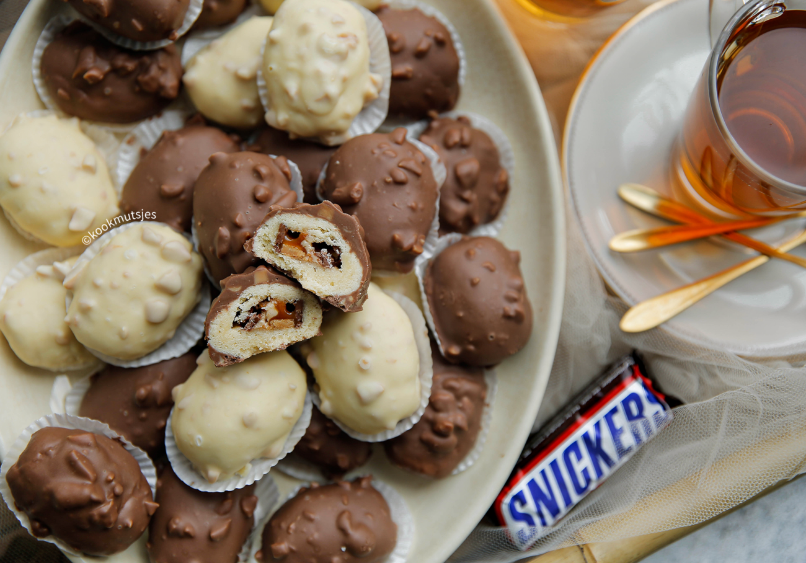

Snickerskoek

Ingredienten
- 150 g roombote
- 100 g kristalsuiker
- 16 g vanillesuiker
- 0.2 g zout
- 1 ei
- 250 g bloem
- 50 g maïzena
- 4 g bakpoeder
Bereiding
- Snijd de Snickers in plakjes.
- Doe de zachte roomboter in een diepe kom. Voeg de suiker,vanillesuiker en het zout toe.
Mix in ca. 3 minuten tot een luchtig beslagje.
Voeg het ei toe en mix 1 minuut. Voeg de bloem, maïzena en het bakpoeder toe.
Mix/kneed tot een mooie koekjesdeeg.
- Neem wat van het koekjesdeeg en vorm kleine bollen van (18 gr per stuk).
- Druk het bolletje plat en leg de Snickers erop. Vouw goed dicht en vorm tot een ovaal.
- Leg de Snickerskoekjes op een bakplaat met bakpapier.
Zet in een voorverwarmde oven op 190 ℃. Bak 10-13 minuten of tot de Snickerskoekjes mooi goudbruin zijn gekleurd.
Laat compleet afkoelen
- Hak de pinda’s en smelt de melkchocolade au bain marie. Voeg de stukjes pinda’s toe en meng goed.
- Haal de Snickerskoekjes één voor één door het chocolademengsel. Leg op een vel bakpapier.
Laat staan tot de chocolade hard genoeg is.